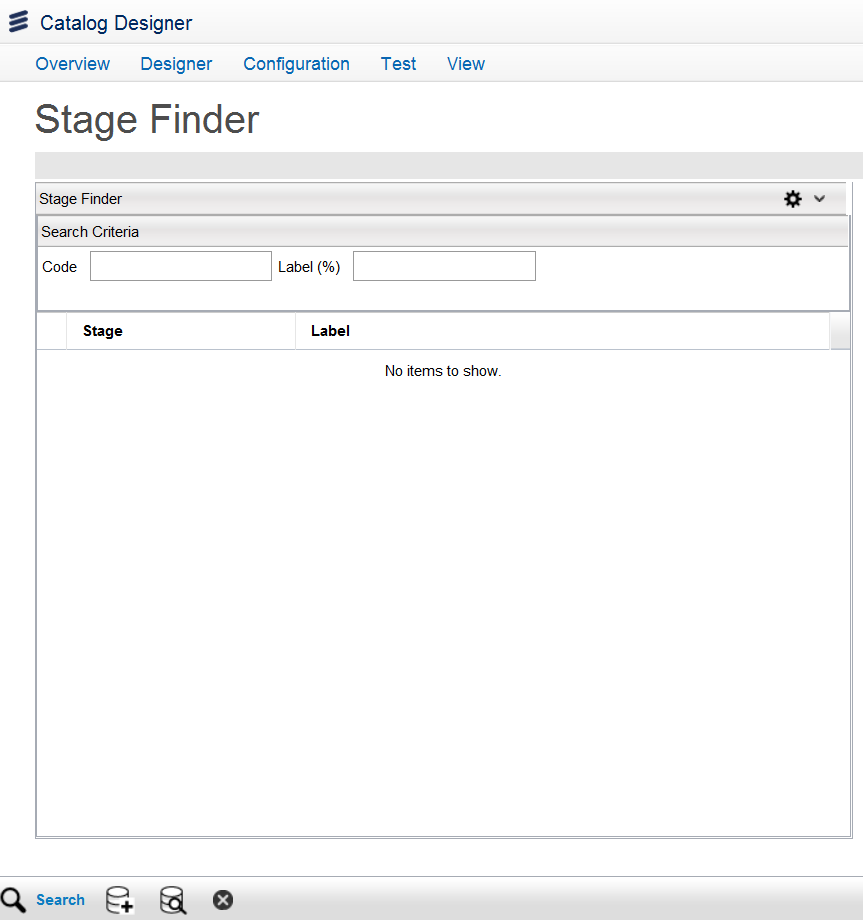
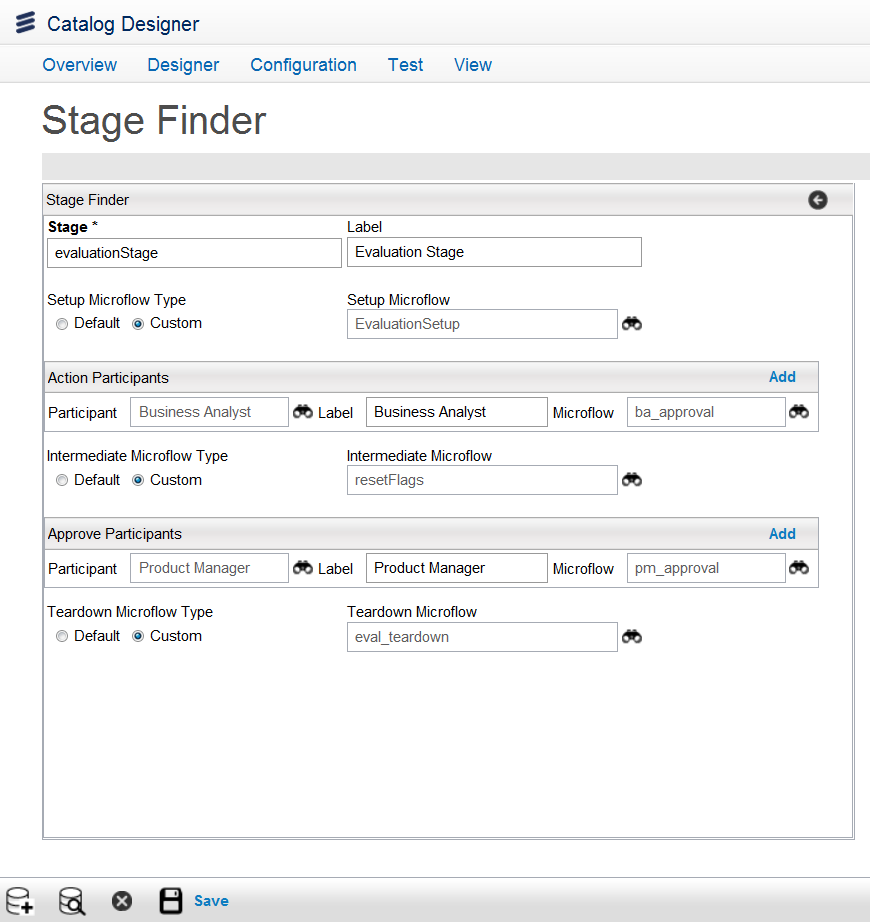

Configure Stages
Each stage represents a set of Technical Action Specifications (TAS), Participants, and Microflows. When a PLD stage is created, new TASs associated with that stage are added to the Orchestration Framework (OF). Each TAS is associated with one microflow and participant. You can access the Configure Stages option using the Quick Start menu on the Ericsson Catalog Manager home page or from the menu bar, by clicking Configuration > Configure PLD > Configure Stages. You can Search, Add, Edit, and Delete the stages.

When configuring stages note that:
- A request is associated with an order.
- An order is subject to a lifecycle (as defined in the getLifecycle script of the metadata).
- The request order (as defined in the ObjectLifeCycleModified script of the metadata) is the order assocated with the request that is following that lifecycle.
To search a stage, enter the search criteria in the Code or Label (%) field, and then click the Search button.
Note: If you create a new stage, you need to made changes to the metadata to accomodate the new stage.
To add a new stage, do the following:
- From the Stage Finder page, click the Add button.
- Enter the information in the Stage and Label fields (for example, evaluationStage).

- Set up the stages for each of the following microflow types:
- Setup Microflow is executed at the beginning of the stage and is responsible for setting the request status to represent the start of the stage.
- Select Custom microflow to change the PLD order initial state according to the statuses defined in the objectLifeCycleModified order lifecycle. It should follow the logic defined in the set up of microflows.
- Select Default microflow to use the default as a placeholder when specific microflows are not available. Default microflow does not update the initial PLD order state.
- Intermediate Microflow is executed in between tasks within a stage.
- Select Custom microflow to prepare the internal PLD state for the next task. resetFlags Microflow should be chosen in 99.9% of the cases.
- Select Default microflow to use the default as a placeholder when specific microflows are not available. Default microflow does not prepare the internal PLD state for the next task.
- Teardown Microflow is executed at the end of the stage when the last task is completed. It changes the state of the request to represent the completion of the stage.
- Select Custom microflow to change the PLD order final state according to the statuses defined in the objectLifeCycleModified order lifecycle. It should follow the logic defined in tear down microflows.
- Select Default microflow to use the default as a place holder when specific microflows are not available. Default TearDown microflow does not update the PLD order final state.
Note: For each custom microflow stage that you add, you need to modify additional scripts (for example, the getLifecycle script and the ObjectLifeCycleModified script) to accommodate metadata changes for the project.
- For the Setup Microflow Type field, select a custom or default out of the box setup microflow.
- If you select Custom, the Setup Microflow field appears.
- Click the search button for this field; the Microflow Details page appears.
- Select a microflow related to the setup workgroup in the list and click the Select button.
- Click the Add button from the Action Participants section; the Participant, Label, and the Microflow fields appear.
- Click the search button for the Participant field. The Participant Page appears with the list of available participants.
Note: If you are adding a participant, you must also add the corresponding microflow. For example, if you add the Business Analyst participant, in the action participant section, make sure that the microflow chosen is from the Business Analyst workgroup and that the microflow action is the corresponding ba_action.
- Select a participant from the list by clicking on its corresponding arrow.
- Enter the participant label in the Label field.
- Click the search button for the Microflow field; the Microflow Details page appears.For a list of pre-defined microflow codes, see Configure Microflows.
- Double-click an action microflow from the list.
- For the Intermediate Microflow Type field, select a custom or default out of the box setup microflow.
- If you select Custom, the Intermediate Microflow field appears.
- Click the search button for this field; the Microflow Details page appears. For a list of pre-defined microflow codes, see Configure Microflows.
- Double-click a microflow related the intermediate workgroup in the list.
- Click the Add button from the Approve Participants section; the Participant, Label, and the Microflow fields appear.
- Click the search button for the Participant field. The Participant Page appears with the list of available participants.
Note: If you are adding a participant, you must also add the corresponding microflow. For example, if you add the Product Manager participant in the approve participant section, make sure that the microflow chosen is from the Product Manager workgroup and that the microflow action is the corresponding pm_approval.
- Select one from the list and click the Select button.
- Enter the information for the Label field.
- Click the search button for the Microflow field; the Microflow Details page appears. For a list of pre-defined microflow codes, see Configure Microflows.
- Double-click an approval microflow from the list.
- For the Teardown Microflow Type field, select a custom or default out of the box setup microflow.
- If you select Custom, the Teardown Microflow field appears.
- Click the search button for this field; the Microflow Details page appears.
- Double-click a microflow related the teardown workgroup in the list.
- Click the Save button.
To edit a stage, do the following:
- From the Stage Finder page, click the Edit button. A list of stages is displayed.
- Select one Stage and click the Edit button.
- Edit the information for the fields, and then click the Save button.
To delete a stage, the select one from the Stage Finder page, and click the Delete button.
|